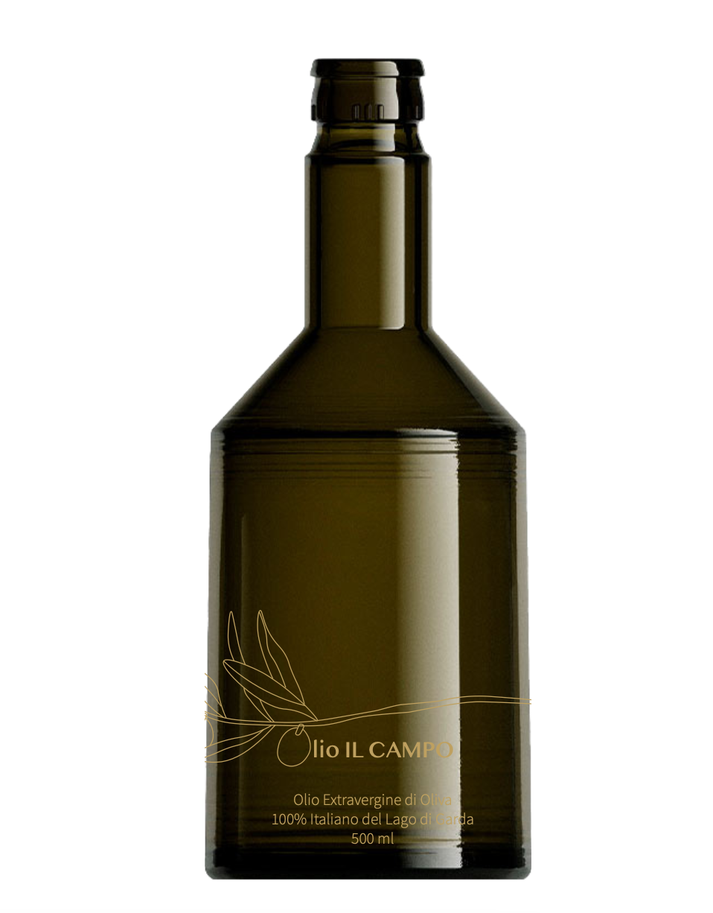

Da oltre 100 anni produciamo olio extravergine di oliva di alta qualità nella zona di Toscolano Maderno, sulle rive del Lago di Garda.
La nostra passione per l'olivicoltura e il rispetto per il territorio ci guidano nella produzione di un olio che racchiude l'essenza del nostro territorio. Ogni bottiglia racconta una storia di tradizione, qualità e amore per la terra.
I Nostri Oli

Il Bordò
Un monocultivar pregiato dalle olive Casaliva dell'Alto Garda, dal fruttato medio-intenso con note di erba tagliata e mandorla verde.
Scopri di piùLe Sigale
Un monocultivar delicato e armonioso dalle olive Leccino, con note di mandorla, erba fresca e un sentore di pomodoro verde.
Scopri di piùIl Riolet
Un monocultivar raro e pregiato dalle olive Gargnà, con note distintive di erba fresca, mandorla verde e carciofo.
Scopri di più